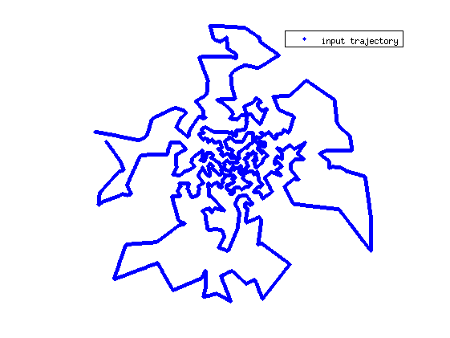
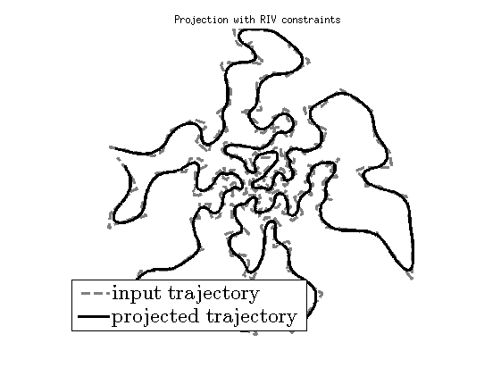
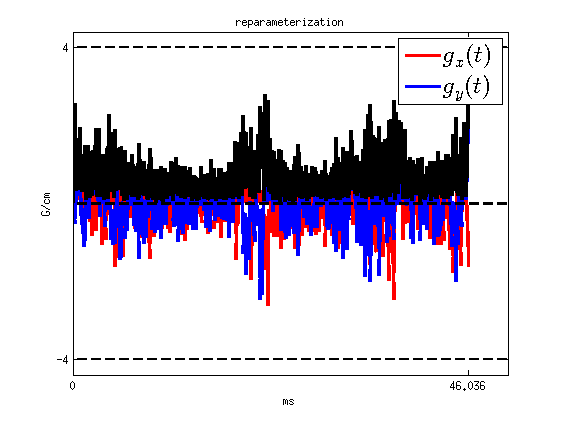
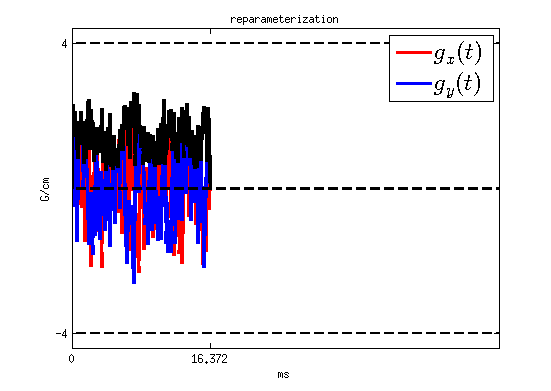

Gradient waveform design with projection algorithm: the example of TSP trajectories
This document shows how to use the algorithm of trajectory projection to design feasible gradient waveforms. It corresponds to Fig. 6 of the paper [Chauffert et al., Gradient Waveform Design for variable density sampling in Magnetic Resonance Imaging]
Contents
Enter the Gradient constraints
close all clear all clc
load citiesTSPexample % Parameters of the scanner (here use in [Lustig et al, IEEE TMI 2008]) Gmax = 40e-3; % T/m Smax = 150e-3; % T/m/ms Kmax = 600; % m^-1 gamma = 42.576*1e3; % kHz/T alpha = gamma*Gmax; % in m^-1 ms^-1 beta = gamma*Smax; % in m^-1 ms^-2 Dt = .004; % sampling time in ms
Choose an input trajectory for the algorithm
Give an input trajectory
x=pts*Kmax; s0=parameterize_maximum_speed(x,.5*alpha,Dt)'; sub=1; % subsampling of the curve for visualization figure, plot(s0(1:sub:end,1),s0(1:sub:end,2),'b.','linewidth',2) axis equal, axis off set(gcf,'Color',[1 1 1]) legend('input trajectory') Gmx = 4; Smx = 15; Kmx = 6; C = Kmx/Kmax*s0; C=[C zeros(size(C,1),1)]; tic [C_riv, time_riv, g_riv, s_riv, k_riv] = minTimeGradient(C,0); % Rotationally invariant solution toc % tic % [C_rv, time_rv, g_rv, s_rv, k_rv]= minTimeGradient(C,1); % Rotationally variant solution % toc
Rotationally Invariant Solution Const arc-length parametrization Compute geometry dependent constraints Solve ODE forward Solve ODE backwards Final Interpolations Done Elapsed time is 32.097042 seconds.
Specify constraints
%CRV=set_MRI_constraints_RV(alpha,beta,Dt); CRIV=set_MRI_constraints_RIV(alpha,beta,Dt); % No additional affine constraint: C_linear=set_Linear_constraints(size(s0,1),size(s0,2)); Algo_param.nit = 80000; % number of iterations Algo_param.L=16; % Lipschitz constant of the gradient Algo_param.discretization_step=Dt; % optional paramteres Algo_param.show_progression = 0; Algo_param.display_results = 0;
Project curve with Rotation-Invariant Constraints
tic s1=Project_Curve_Affine_Constraints(s0,CRIV,C_linear,Algo_param); toc % Compute gradients T=size(s1,1); t=1:T; g1=Prime(s1,Dt)/gamma; gg1=Second(s1,Dt)/gamma; % %% Project curve with Rotation-Variant Constraints % % tic % s2=Project_Curve_Affine_Constraints(s0,CRV,C_linear,Algo_param); % toc % % % Compute gradients % g2=Prime(s2,Dt)/gamma; % gg2=Second(s2,Dt)/gamma;
Elapsed time is 196.276058 seconds.
Display projected curves
figure, plot(s0(1:sub:end,1),s0(1:sub:end,2),'--','color',[.5 .5 .5],'linewidth',3) axis equal, axis off set(gcf,'Color',[1 1 1]) hold on, plot(s1(:,1),s1(:,2),'k','linewidth',3) axis equal, axis off set(gcf,'Color',[1 1 1]) hold off title('Projection with RIV constraints') h=legend('input trajectory', 'projected trajectory','location','sw'); set(h,'FontSize',20,'interpreter','latex'); % % figure, plot(s0(1:sub:end,1),s0(1:sub:end,2),'--','color',[.5 .5 .5],'linewidth',3) % axis equal, axis off % set(gcf,'Color',[1 1 1]) % hold on % plot(s2(:,1),s2(:,2),'k','linewidth',3) % axis equal, axis off % set(gcf,'Color',[1 1 1]) % hold off % title('Projection with RV constraints') % h=legend('input trajectory', 'projected trajectory','location','sw'); % set(h,'FontSize',20,'interpreter','latex'); % %% Display gradients for rotation variant constraints % % T_rv=1.1*time_rv/Dt; % t_rv=1:T_rv; % figure % plot(g_rv(:,1)*1e-2,'r','linewidth',3), axis([0 T_rv -Gmax*1.1 Gmax*1.1]) % hold on, plot(g_rv(:,2)*1e-2,'b','linewidth',3), axis([0 T_rv -Gmax*1.1 Gmax*1.1]) % set(gcf,'Color',[1 1 1]) % hold on, plot(t_rv,0*t_rv, '--k','lineWidth',3) % hold on, plot(t_rv,0*t_rv+Gmax, '--k','lineWidth',2) % hold on, plot(t_rv,0*t_rv-Gmax, '--k','lineWidth',2) % set(gca,'XTick',[0,T_rv/1.1]) % set(gca,'XTickLabel',{'0',time_rv}) % set(gca,'YTick',[-Gmax,Gmax]) % set(gca,'YTickLabel',{-Gmax*1e2,Gmax*1e2}) % set(gca,'FontSize',15) % ylabel('G/cm') % xlabel('ms') % hold off % h_legend=legend('$ g_x(t)$','$ g_y(t)$'); % set(h_legend,'FontSize',20,'interpreter','latex'); % title('reparameterization') % % % display gradients % figure, % plot(g2(:,1),'r','linewidth',3), axis([0 T_rv -Gmax*1.1 Gmax*1.1]) % hold on, plot(g2(:,2),'b','linewidth',3), axis([0 T_rv -Gmax*1.1 Gmax*1.1]) % set(gcf,'Color',[1 1 1]) % hold on, plot(t_rv,0*t_rv, '--k','lineWidth',3) % hold on, plot(t_rv,0*t_rv+Gmax, '--k','lineWidth',2) % hold on, plot(t_rv,0*t_rv-Gmax, '--k','lineWidth',2) % set(gca,'XTick',[0,T]) % set(gca,'XTickLabel',{'0',T*Dt}) % set(gca,'YTick',[-Gmax,Gmax]) % set(gca,'YTickLabel',{-Gmax*1e2,Gmax*1e2}) % set(gca,'FontSize',15) % ylabel('G/cm') % xlabel('ms') % hold off % h_legend=legend('$ g_x(t)$','$ g_y(t)$'); % set(h_legend,'FontSize',20,'interpreter','latex'); % title('projection')
Display gradients for rotation invariant constraints
T_riv=1.1*time_riv/Dt; t_riv=1:T_riv; figure, plot(g_riv(:,1)*1e-2,'r','linewidth',3), axis([0 T_riv -Gmax*1.1 Gmax*1.1]) hold on, plot(g_riv(:,2)*1e-2,'b','linewidth',3), axis([0 T_riv -Gmax*1.1 Gmax*1.1]) g2n=sqrt(g_riv(:,1).^2+g_riv(:,2).^2)*1e-2; hold on, plot(g2n,'k','linewidth',3), axis([0 T_riv -Gmax*1.1 Gmax*1.1]) set(gcf,'Color',[1 1 1]) hold on, plot(t_riv,0*t_riv, '--k','lineWidth',3) hold on, plot(t_riv,0*t_riv+Gmax, '--k','lineWidth',2) hold on, plot(t_riv,0*t_riv-Gmax, '--k','lineWidth',2) set(gca,'XTick',[0,T_riv/1.1]) set(gca,'XTickLabel',{'0',time_riv}) set(gca,'YTick',[-Gmax,Gmax]) set(gca,'YTickLabel',{-Gmax*1e2,Gmax*1e2}) set(gca,'FontSize',15) ylabel('G/cm') xlabel('ms') hold off h_legend=legend('$ g_x(t)$','$ g_y(t)$'); set(h_legend,'FontSize',20,'interpreter','latex'); title('reparameterization') % display gradients figure, plot(g1(:,1),'r','linewidth',3), axis([0 T_riv -Gmax*1.1 Gmax*1.1]) hold on, plot(g1(:,2),'b','linewidth',3), axis([0 T_riv -Gmax*1.1 Gmax*1.1]) g1n=sqrt(g1(:,1).^2+g1(:,2).^2); hold on, plot(g1n,'k','linewidth',3), axis([0 T_riv -Gmax*1.1 Gmax*1.1]) set(gcf,'Color',[1 1 1]) hold on, plot(t_riv,0*t_riv, '--k','lineWidth',3) hold on, plot(t_riv,0*t_riv+Gmax, '--k','lineWidth',2) hold on, plot(t_riv,0*t_riv-Gmax, '--k','lineWidth',2) set(gca,'XTick',[0,T]) set(gca,'XTickLabel',{'0',T*Dt}) set(gca,'YTick',[-Gmax,Gmax]) set(gca,'YTickLabel',{-Gmax*1e2,Gmax*1e2}) set(gca,'FontSize',15) ylabel('G/cm') xlabel('ms') hold off h_legend=legend('$ g_x(t)$','$ g_y(t)$'); set(h_legend,'FontSize',20,'interpreter','latex'); title('reparameterization') 